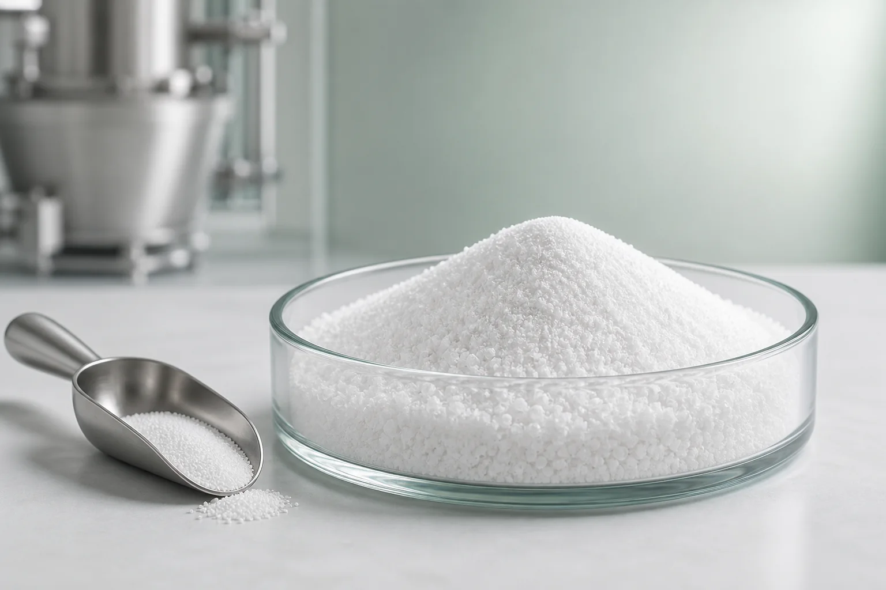

Управление влажностью
Может поддерживать связывание и переработку воды в подходящих белковых формулах.
Пищевой фосфат · INS 451(i) · STPP
Триполифосфат натрия — функциональный пищевой фосфат для удержания влаги, стабилизации текстуры, эмульгирования и связывания ионов металлов в разрешённых пищевых продуктах.
Включите необходимый стандарт, количество, предпочтения по паллетам, место назначения и заявку для эффективного рассмотрения.

Обзор продукта
Пищевой триполифосфат — это соль пентазотрия трифосфорной кислоты. Он также известен как пентанатрифтисфат и несёт в себе Кодекс INS номер 451(i). Материал поставляется в виде белых гранул или порошка и вмещается в выбранные переработанные продукты, когда требуется функциональность фосфатов.
В вопросах закупок «пищевая категория» никогда не следует рассматривать как целостную спецификацию. Покупатели также должны подтвердить анализ, P2O5, нерастворимые вещества, пределы загрязняющих веществ, форма частиц, методы испытаний и документация по рынку назначения.
Значение формулировки
STPP может обеспечивать несколько технических функций, но производительность зависит от полной фосфатной системы, сырья, условий процесса и уровня легального использования.
Может поддерживать связывание и переработку воды в подходящих белковых формулах.
Помогает переработчикам управлять остротой, консистенцией и текстурой готового продукта в проверенных рецептах.
Поддерживает стабильные системы жира, белка и воды в отдельных областях обработанной пищи.
Связывает определённые ионы металлов, которые в противном случае могут мешать работе продукта или процесса.
Типичные области применения
Предполагаемая категория продуктов, дозировка и заявление должны быть пересмотрены в соответствии с нормативами производственного и наследственного рынков.
STPP рассматривается в валидированных рассолах, маринадах и системах обработанного белка, где важны удержание влаги, текстура и выход процесса.
Пищевые фосфаты могут использоваться в отдельных молочных и более широких переработанных пищевых продуктах для эмульгации, стабилизации или управления минералами-ионами.
Технические характеристики продукции
Следующие ограничения воспроизведены из предоставленного технического листа продукта. Они предназначены для оценки продукции и ссылок; согласованная спецификация и COA партии регулируют заказ.
| Тестовый элемент | Спецификация | Выражение |
|---|---|---|
| Анализ (Na5P3O10) | ≥ 85.0 | % |
| P2O5 | 56.0–58.0 | % |
| Нерастворимые в воде вещества | ≤ 0.1 | % |
| Фтор | ≤ 50 | ppm |
| Мышьяк | ≤ 3 | ppm |
| Тяжёлые металлы | ≤ 10 | ppm |
| Свинец | ≤ 4 | ppm |
| Внешний вид | Белые гранулы или порошок | Визуальное оформление |
Уведомление о техническом листе: Результаты могут отличаться из-за различий в условиях испытаний, оборудовании и методах. Перед заключением контракта подтвердите методы, правила отбора проб и критерии приема.
Упаковка и логистика
Окончательная загрузка зависит от лимитов контейнеров, маршрута, размеров паллет и требований к доставке.
Хранение и срок хранения
Вопросы покупателя
Он применяется в разрешённых пищевых продуктах, где требуется функциональность фосфатов, включая выбранные мяса, птицу, морепродукты, молочные продукты и переработанные продукты. Точная функция и уровень использования зависят от рецепта, процесса и местных правил.
Пентасадридфосфат идентифицируется по Кодексу INS номер 451(i). Названия и разрешённые области применения для рынка могут различаться, поэтому покупателю следует проверить требования рынка назначения.
Нет. На этой странице представлены предоставленные лимиты ссылок. Сертификат анализа отражает результаты по конкретной партии и должен быть сверён с согласованными спецификациями покупки.
Стандартная упаковка — это наружный пакет из крафтовой бумаги весом 25 кг с внутренним мешком для PE. Эталонная нагрузка составляет 23 млн тонн на 20 ГП без паллетов или 18 тонн с поддонами, при условии подтверждения отправки.
Предоставить необходимые стандарты пищевых продуктов, предпочтения, количество, упаковку, требования к паллетам, порт назначения, применение и цель доставки.
Спросите у отдела продаж спецификации, TDS, SDS, соответствующие документы по качеству и наличие образцов. Укажите своё заявление и адрес назначения, чтобы соответствующие документы могли быть рассмотрены.
Обсудить поставку
Делитесь коммерческими и техническими деталями, влияющими на выбор продукции, загрузку контейнеров и стоимость посадки.